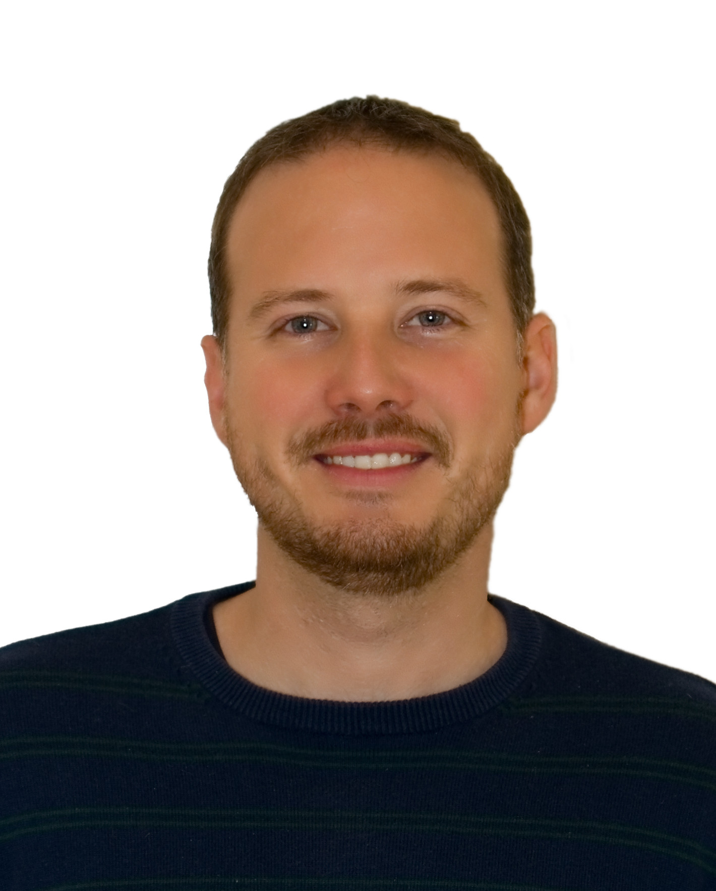
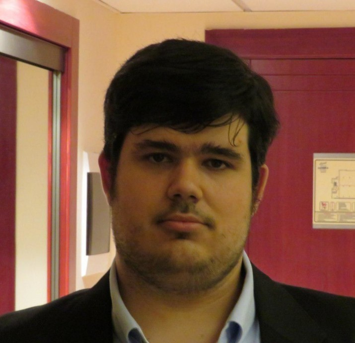

People
The CAPS research group was created in December 2010 by a small group of young researchers from the University of Murcia. As for today, the group is led by Manuel E Acacio and these are its members:
Researcher |
Position |
Research interest |
|
 Manuel E. Acacio (PI) Manuel E. Acacio (PI) |
Professor | Computer Architecture | meacacio at um.es |
 Juan L. Aragón Juan L. Aragón |
Associate Professor | Heterogeneous Parallel Systems, GPUs, Application-specific Accelerators |
jlaragon at um.es |
 Gregorio Bernabé Gregorio Bernabé |
Associate Professor | Computer Architecture, Distributed Computing, Parallel Computing |
gbernabe at um.es |
| Juan Fernández | Associate Professor | Computer Architecture | juanf at um.es |
 Antonio Flores Antonio Flores |
Associate Professor | Computer Architecture | aflores at um.es |
| Pilar González | Associate Professor | Computer Architecture | pilargf at um.es |
 Juan Piernas Juan Piernas |
Associate Professor | Fault-tolerant Distributed Storage Systems | piernas at um.es |
|  Alberto Ros | Associate Professor | Computer Architecture, Processor Design | aros at um.es |
| Alexandra Jimborean | Researcher | Compile-time and Runtime Code Analysis, Software-Hardware Co-designs |
alexandra.jimborean at um.es |
| Ruben Titos Gil | Adjunct Professor | Computer Architecture | rtitos at um.es |
PhD and PostDoc
The following researchers are working in the group:
Researcher |
Position |
Research interest |
|
| Juan M. Cebrián | PostDoc | Computer Architecture | jcebrian at um.es |
| Josué Feliu | PostDoc | Computer Architecture | josue.f.p at um.es |
| David Corbalán Navarro | PhD | GPU, High Performance Computing, Computer Architecture |
david.corbalan2 at um.es |
 Francisco Muñoz-Martínez Francisco Muñoz-Martínez |
PhD | DNN Accelerators, High Performance Computing, Computer Architecture |
francisco.munoz2 at um.es |
| Sawan Singh | PhD | Computer Architecture, Hardware-Software Co-designs |
singh.sawan at um.es |
|  Eduardo José Gómez Hernández | PhD | Computer Architecture, Cache Coherence, Memory Hierarchy, Multi-core Architectures |
eduardojose.gomez at um.es |
| Sebastián Sumin Kim | PhD | Computer Architecture, Speculative Execution, Memory Dependence Prediction |
sebastiansumin.kim at um.es |
| Ashkan Asgharzadeh | PhD | Micro Architecture, Cache Coherence, Memory Consistency |
ashkan.asgharzadeh at um.es |
Collaborators
Our group collaborate with the following researchers:
Researcher |
Position |
Research interest |
|
| José Luis Abellán Miguel | Associate Professor UCAM, Murcia (Spain) |
HW/SW co-design & edge computing | jlabellan at ucam.edu |
Former members
The following students sucessfully completed their PhD with us:
Student |
Award date |
First Employment |
| Daniel Sánchez | July 2011 | Intel Labs Barcelona (Spain) |
| Ana Avilés | December 2014 | Greenhost (Netherlands) |
| Epifanio Gaona | January 2016 | -- |